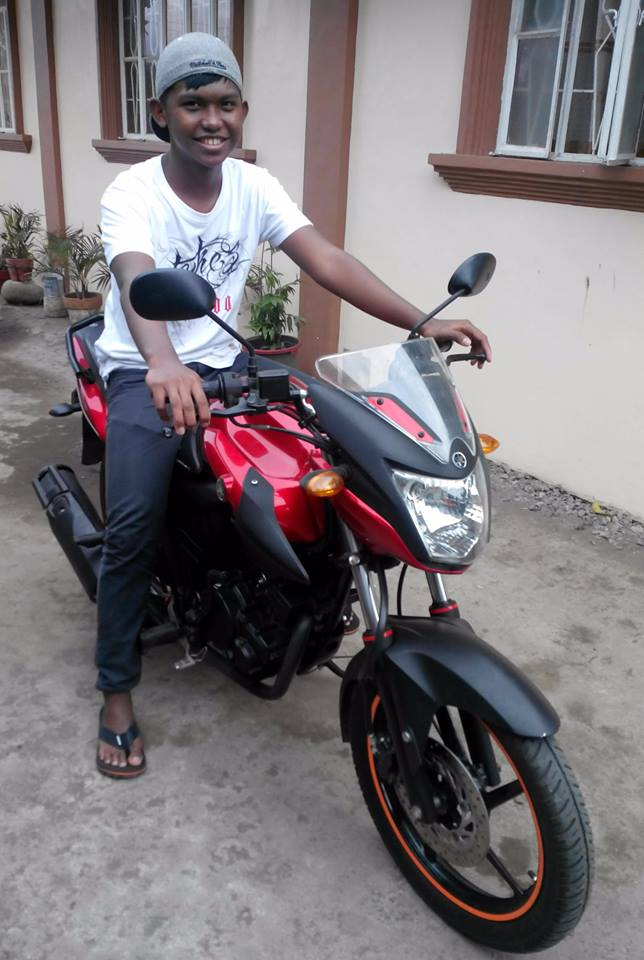

Let me Introduce myself: My name is Zandro Lance. I was born on 05 August 2000
I was born in Batangas City
Lives In Batangas City
- 2020 Graduated from Lyceum of the Philippines University - Batangas (Senior High School)
- Member of CY'A Batangas Chapter (Not Active)
- Member Of Boy Scout Of the Philippines (2014-2016)
- 2017 Graduated from Libjo National High School (Junior High School)
- 2013 Graduated from Saint Vincent Institute of Arts and Sciences (Elementary School)
- I love to listen music
- I'm shy and an Introvert
